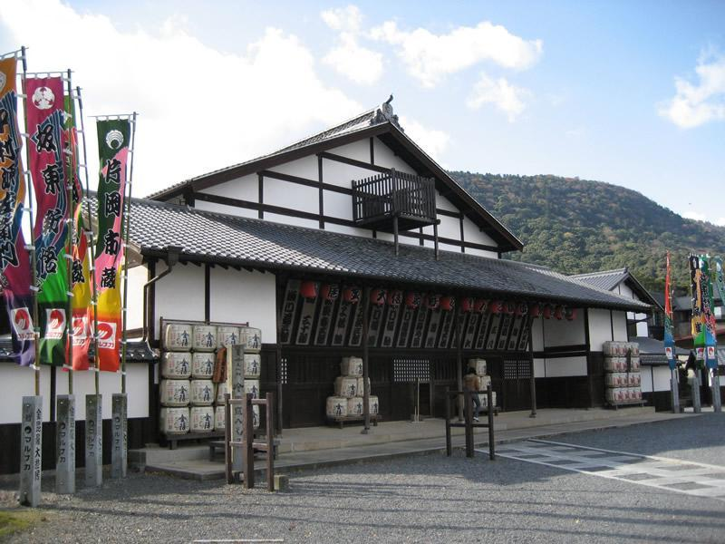

こんぴら歌舞伎とこんぴらさんの見どころ
こんぴら歌舞伎
旧金毘羅大芝居は、天保6年（1835）に建築された現存する日本最古の本格的芝居小屋です。
昭和45年（1970）、学術的かつ文化的価値の高さを認められ国の重要文化財の指定を受け、その保存を図るため昭和51年（1976）、国の多額な補助金を得て復元再興がなされ、現在地に移転し、天保時代の姿そのままに甦りました。
「四国こんぴら歌舞伎大芝居」は、昭和60年（1985）6月の初公演以来、文化庁、香川県及び松竹株式会社のご理解ご協力を得て毎年開催され、町をあげて取り組む地域振興のイベントとして、全国からの歌舞伎ファンを魅了し続けています。
平成15年（2003）、旧金毘羅大芝居では、耐震構造補強工事（平成の大改修）が行われ、併せて長年、観劇の妨げとなっていた4本の鉄柱も取り除かれ、さらに調査の際、江戸時代の仕掛け「ブドウ棚」「かけすじ」の痕跡が発見され、これを復元。旧金毘羅大芝居は細部にわたり、江戸の時代を垣間見せる芝 居小屋へと再度、変貌を遂げました。
また、舞台と客席が一体化となった劇場空間に、復元された仕掛けを活用する事でより一層、上演される演目の幅も広がりを見せています。
第三十三回・四国こんぴら歌舞伎大芝居は、歌舞伎界をけん引する女形役者として期待される中村芝雀改め五代目中村雀右衛門さんの襲名披露口上（午後の部）のほか、今回の座頭を務める人間国宝の片岡仁左衛門さん（15年ぶり3回目）が出演する事も注目されています。

●金丸座
天保6年の建築で現存する日本最古の芝居小屋として国の重要文化財に指定されており、歌舞伎役者による公演が毎年盛大に行われます。
●文化ゾーン
書院・高橋由一館・宝物館・金毘羅庶民信仰資料収蔵庫など、金刀比羅宮の様々な美術品や宝物を所蔵し、その一部を一般公開しています。また、展覧会やイベントなども開催されます。
●奥社
金刀比羅本教の教祖である厳魂彦命をお祀りしています。1月6日に例祭、毎月6日に月次祭を斎行しています。奥社まで石段1368段。
●神椿
本宮まで785段ある石段の途中500段目の森の中にある資生堂パーラー運営のカフェとレストランの「神椿」。ほっと一息お茶が楽しめます。
●こんぴら温泉
こんぴらさんへのお参りした後、癒しの温泉へ。百数十年も続く老舗や新しいホテルもあり、サービスや設備は最高です。
●本場讃岐うどん
琴平町周辺は有名店がいっぱい！しょゆうどん、釜揚げうどんなど本場のさぬきうどんをお楽しみください。うどん巡りはうどんタクシーが便利です！